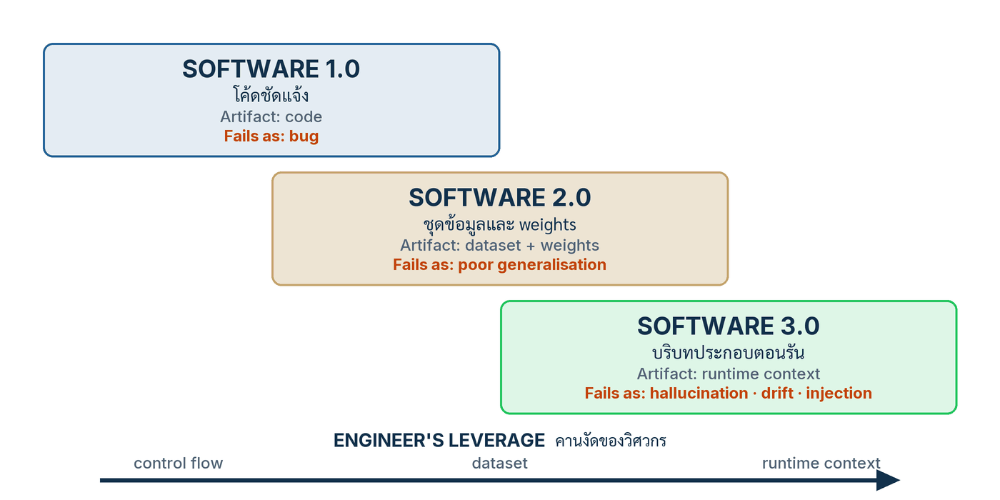

ในบทความนี้
- สามยุคของซอฟต์แวร์เป็นชั้นซ้อนกันในเส้นทางเรียกเดียว — ตาราง 3 ของเปเปอร์ครบห้ามิติ พร้อมลายเซ็นความล้มเหลวของแต่ละชั้น
- คานงัดของวิศวกรย้ายจาก control flow สู่ dataset สู่ context — และการเขียนโปรแกรมแบบ intentional
- ลงมือทำ 7 ขั้น — จากบัญชี artifact สู่ layer map ที่มีชีวิต
- Layer map ของน้องคราม — สิบสาม artifact จริง กับยุค ที่เก็บ version และลายเซ็นความล้มเหลว
- Validation check — เจ็ดคำถามผ่าน/ไม่ผ่าน ที่ทุกข้อต้องตอบด้วย artifact
- ก้าวต่อไป — จากแผนที่ชั้นของระบบ สู่รอยต่อที่การรับประกันเดิมพัง
In this post
- The three eras of software are stacked layers in one call path — the paper's Table 3 in all five dimensions, with each layer's failure signature
- The engineer's leverage moves from control flow to dataset to context — and programming becomes intentional
- The seven steps — from an artifact inventory to a living layer map
- Nong Kram's layer map — thirteen real artifacts, each with its era, its versioning home and its failure signature
- Validation check — seven pass/fail questions, every one answered with an artifact
- The road ahead — from the map of your system's layers to the seams where the old guarantees break
🤔 ถ้าพรุ่งนี้เช้าน้องครามตอบสิทธิ์คืนเงินผิดหนึ่งเคส คุณจะเปิดอะไรก่อน — โค้ดใน src/ โมเดลที่ vendor โฮสต์ หรือ system prompt?
ตอนที่แล้ว What Is an AI-Core System? เราจำแนกระบบด้วยสองแกน — อำนาจตัดสินใจ กับ ความขาดไม่ได้ของโมเดล — แล้ววางน้องคราม ผู้ช่วยตอบลูกค้าของร้านเซรามิกครามคราฟต์ ลงช่อง AI-core: model output ควบคุม external action ผ่าน tool refund และการทดสอบถอดโมเดลออกทำให้ task success ร่วงต่ำกว่า threshold ที่ประกาศไว้ล่วงหน้า ช่องนั้นมากับภาระเต็มรูปแบบ — hard mediation, semantic evaluation, tracing, fallback — แต่ก่อนจะล้อมกรอบอะไรได้จริง ต้องตอบคำถามพื้นฐานกว่านั้นก่อน: ระบบที่เรากำลังจะล้อมประกอบด้วยอะไรบ้าง และพฤติกรรมของมัน "อาศัยอยู่ใน" ไฟล์ไหน
คำตอบของทั้งบทความมาจากบทที่ 3 ของเปเปอร์: ระบบที่มี AI เป็นแกนหนึ่งระบบ มีซอฟต์แวร์สามยุคซ้อนกันอยู่ในเส้นทางเรียกเดียว — Software 1.0 โค้ดชัดแจ้งที่วิศวกรเขียนเอง Software 2.0 น้ำหนักที่ optimiser เรียนรู้จาก dataset และ Software 3.0 บริบทที่ประกอบขึ้นตอนรันแล้วส่งให้โมเดลแช่แข็งตีความ สามชั้นนี้ไม่ใช่สถาปัตยกรรมคู่แข่งที่ต้องเลือกข้าง แต่ทำงานพร้อมกันในคำขอเดียวของลูกค้าคนเดียว แต่ละชั้นมีผู้เขียนของมันเอง มี artifact หลักของมันเอง มีวิธีประกันคุณภาพของมันเอง และเมื่อพัง มันพังด้วยลายเซ็นคนละแบบ งานของตอนนี้คือทำแผนที่ระบบของคุณลงสามชั้นนั้น ทีละ artifact แล้วเขียนออกมาเป็นเอกสารที่ทีมใช้ triage เหตุการณ์จริงได้
1. สามยุคไม่แทนที่กัน — มันซ้อนกันในระบบเดียว
ข้อสรุปของหัวข้อนี้พูดได้ในประโยคเดียว: Software 1.0, 2.0 และ 3.0 ไม่ใช่ลำดับวิวัฒนาการที่รุ่นใหม่กลืนรุ่นเก่า แต่เป็นชั้นที่ซ้อนทับกัน (overlapping layers) ในเส้นทางเรียกเดียวของระบบที่ deploy จริง[1] คำถามเดียวของลูกค้า — "ขอคืนเงินออร์เดอร์ #1042 ได้ไหม" — เดินผ่านทั้งสามชั้นในเวลาไม่กี่ร้อยมิลลิวินาที และการเข้าใจว่าแต่ละช่วงของเส้นทางนั้นอยู่ชั้นไหน คือรากของทุกตอนที่เหลือในซีรีส์นี้
Software 1.0 คือชั้นที่เรารู้จักดีที่สุด: ตรรกะชัดแจ้งที่วิศวกรเขียนเป็น source code — route ของ API, การต่อฐานข้อมูล, ฟังก์ชัน refund() ที่ยิงจริงไปยัง payment processor ความไม่แน่นอนหลักของชั้นนี้คือความผิดพลาดของมนุษย์ในตรรกะ และวิธีประกันคุณภาพของมันโตมาหลายสิบปีจนแข็งแรง: type system, code review, ชุดทดสอบ และ formal proof สำหรับส่วนที่วิกฤต เมื่อชั้นนี้พัง มันพังแบบ bug — ตรรกะผิดที่ reproduce ได้ อ่านได้จาก stack trace[1]
Software 2.0 คือชั้นขององค์ประกอบที่เรียนรู้ — คำที่ Karpathy ตั้งไว้ตั้งแต่ปี 2017[2] ผู้เขียน artifact ของชั้นนี้ไม่ใช่มนุษย์แต่เป็น optimiser: วิศวกรคัด dataset และนิยาม objective แล้วกระบวนการฝึกเขียน weights ออกมาให้ ในระบบของเราชั้นนี้คือโมเดลภาษา M_v ที่ถูกแช่แข็งและ pin รุ่น กับ embedding model ของฝั่ง retrieval ความไม่แน่นอนหลักไม่ใช่ตรรกะผิดแต่คือการ generalise นอกขอบข้อมูลฝึก ลายเซ็นความล้มเหลวของมันคือ poor generalisation และ distribution shift และวินัยการประกันคุณภาพของยุคนี้ก็มีรูปธรรมของมันเอง — held-out evaluation กับ rubric ความพร้อม production อย่าง ML Test Score[4] ซึ่งเปเปอร์ต่อยอดต่อไปยังชั้นที่สาม
Software 3.0 คือชั้นที่ใหม่จริงและถูกเข้าใจน้อยที่สุด: บริบทที่ประกอบขึ้น ตอนรัน — system prompt, ข้อความของลูกค้า, passage ที่ retrieval หยิบมา, ผลของ tool — ทั้งหมดถูกประกอบเป็น input หนึ่งก้อนแล้วส่งให้โมเดลแช่แข็งตีความ[3] artifact ของชั้นนี้คือ assembled context, tool schema และ orchestration policy จุดที่คนมักเข้าใจผิดคือความแปรผัน: ความสุ่มจากการ sample ตัดทิ้งได้ด้วย deterministic decoding แต่ drift จาก retrieval และจากการเปลี่ยนรุ่นโมเดล ตัดไม่ได้ เมื่อชั้นนี้พัง มันพังเป็น อาการแต่งข้อเท็จจริง (hallucination), drift และ การฉีดคำสั่งแฝง (prompt injection) — และการวินิจฉัยต้องใช้ invocation trace ฉบับเต็ม เพราะความล้มเหลวอาจไม่เกิดซ้ำเมื่อรันใหม่[1]
{kind=link}

ตาราง 3 ของเปเปอร์วางสามชั้นนี้เทียบกันครบห้ามิติ ผมย่อสาระสำคัญของมันไว้ตรงนี้ — ตารางนี้คือกระดูกสันหลังของ layer map ที่เราจะสร้างในหัวข้อ 3
| มิติ | Software 1.0 — โค้ดชัดแจ้ง | Software 2.0 — องค์ประกอบที่เรียนรู้ | Software 3.0 — บริบทประกอบตอนรัน |
|---|---|---|---|
| ใครเขียนพฤติกรรม | วิศวกรเขียนตรรกะด้วยมือ ทีละบรรทัด | optimiser เขียน weights จาก dataset + objective ที่วิศวกรคัดและนิยาม | โค้ดประกอบบริบท + retrieval ประกอบ input ตอนรัน แล้วโมเดลแช่แข็งสังเคราะห์พฤติกรรมส่วนนั้น |
| Artifact หลัก และความแปรผันตอนรัน | source code — พฤติกรรมตายตัวตาม input ที่ประกาศ | weights (แช่แข็ง ณ วัน deploy) — ตัวฟังก์ชันนิ่ง แต่ input โลกจริงเลื่อนได้ | assembled context, tool schema, orchestration policy — เปลี่ยนทุกคำขอ; ความสุ่มจาก sampling ตัดได้ด้วย deterministic decoding แต่ drift จาก retrieval และรุ่นโมเดลตัดไม่ได้ |
| ความไม่แน่นอนหลัก และวิธีประกัน | ความผิดพลาดของมนุษย์ในตรรกะ — types, review, tests, proof สำหรับส่วนวิกฤต | การ generalise นอกขอบข้อมูลฝึก — held-out evaluation และวินัยความพร้อม production | พฤติกรรมเชิงความหมายของโมเดลต่อบริบทที่ประกอบ — golden set, rails ตอนรัน และ tracing (เนื้อหาตอน #7–#9) |
| พื้นผิวการเปลี่ยนแปลง และการมองเห็นความล้มเหลว | การเปลี่ยนคือ code diff; ความล้มเหลว reproduce ได้จาก stack trace | การเปลี่ยนคือ dataset ใหม่ retrain หรือรุ่นโมเดลใหม่; มองเห็นผ่าน metric รวมและ data snapshot | การเปลี่ยนคือแก้ prompt, corpus, schema หรือ config — บ่อยครั้งไม่มี diff ในโค้ดเลย; ความล้มเหลวอาจไม่เกิดซ้ำเมื่อ resample จึงต้องใช้ invocation trace ฉบับเต็ม |
| ลายเซ็นความล้มเหลว | bug — ตรรกะผิด | poor generalisation, distribution shift | อาการแต่งข้อเท็จจริง, drift, การฉีดคำสั่งแฝง |
อ่านตารางแล้วสิ่งที่ต้องไม่พลาดคือคำว่า ซ้อนกัน ไม่ใช่ แทนที่กัน คำขอคืนเงินหนึ่งคำขอ: FastAPI route (1.0) รับข้อความ โค้ดประกอบบริบท (1.0) เรียก retrieval ที่พึ่ง embedding model (2.0) หยิบ passage จาก corpus แล้วประกอบเป็น context (3.0) ส่งให้ M_v (2.0) ตีความ ผลที่ได้อาจเป็น tool call ที่ต้องผ่าน schema (3.0) ก่อนโค้ด refund() (1.0) สร้างผลจริง — สามยุคสลับกันคุมเส้นทางเดียวหลายรอบในไม่กี่ร้อยมิลลิวินาที
ชั้น 1.0 ไม่เคยหายไป — และห้ามหายไป
เปเปอร์ย้ำเรื่องนี้ชัดเจนและผมอยากย้ำซ้ำ: ต่อให้ระบบ "เป็น 3.0" แค่ไหน โค้ดยุค 1.0 ยังถือสามสิ่งที่ระบบทั้งหมดพึ่งพา — control flow, interface และการผ่านตัวกลาง (mediation) ของทุกผลกระทบ[1] ตัวที่ตัดสินว่า tool call ได้รับอนุญาตหรือไม่ ตัวที่ validate schema ตัวที่เขียน trace — ทั้งหมดคือโค้ดชัดแจ้งที่เขียนโดยมนุษย์ ทดสอบแบบ 1.0 และรีวิวแบบ 1.0 ทุกการ์ดทุกรางที่ซีรีส์นี้จะสร้างในตอนหลัง ๆ ล้วนเป็นซอฟต์แวร์ยุคแรกทั้งสิ้น
💡 มุมมองของผม: วิธีจับทีมที่หลงคิดว่าตัวเอง "ย้ายไป Software 3.0 แล้ว" คือถามคำถามเดียว — ถ้าพรุ่งนี้ guard ที่คุม refund ปล่อยรายการที่ไม่ควรปล่อย ใครแก้ และแก้ที่ไฟล์ไหน คำตอบจะเป็นวิศวกรกับไฟล์ .py เสมอ ไม่ใช่ prompt engineer กับ dashboard เพราะสิ่งที่ล้มไม่ใช่ความสามารถของโมเดล แต่คือโค้ด 1.0 ที่เราไม่ได้เขียนให้แน่นพอ ทีมที่เลิกลงทุนกับชั้น 1.0 เพราะคิดว่ามัน "ตกยุค" กำลังรื้อพื้นห้องที่ตัวเองยืนอยู่
2. คานงัดย้ายที่ — imperative, declarative, intentional
ข้อสรุปของหัวข้อนี้: สิ่งที่เปลี่ยนข้ามสามยุคไม่ใช่ "ภาษาที่ใช้เขียน" แต่คือ ตำแหน่งของคานงัด ของวิศวกร — จาก control flow ในยุค 1.0 ไปที่ dataset กับ loss ในยุค 2.0 และมาอยู่ที่บริบทตอนรันในยุค 3.0 ซึ่งเปเปอร์เรียกงานชิ้นนี้ว่า วิศวกรรมบริบท (context engineering)[1] เข้าใจตำแหน่งคานงัดผิด แปลว่าออกแรงผิดที่ทั้งโปรเจกต์
มองผ่านเลนส์ "วิธีระบุพฤติกรรม" จะเห็นการย้ายชัดที่สุด ยุค 1.0 เราเขียนแบบ imperative — สั่งเครื่องทีละขั้นว่าทำอะไร ยุค 2.0 เราเขียนแบบ declarative — ประกาศ objective บน dataset แล้วให้ optimiser หาฟังก์ชันเอง ยุค 3.0 เราเขียนแบบที่เปเปอร์เรียกว่า intentional — ประกาศสี่สิ่งต่อไปนี้ แล้วมอบการสังเคราะห์พฤติกรรมส่วนนั้นให้แกนโมเดล[1] Karpathy สรุปภาพเดียวกันในการบรรยายปี 2025 ว่ารอบนี้ซอฟต์แวร์กำลังเปลี่ยนอีกครั้ง — โปรแกรมจำนวนมากขึ้นเรื่อย ๆ ถูก "เขียน" ด้วยภาษาธรรมชาติที่ป้อนให้โมเดล[3]
- เจตนา (intent) — ระบบนี้พยายามทำอะไรให้ใคร ภายใต้กติกาอะไร — สำหรับน้องครามคือ system prompt ที่นิยามบทบาท ขอบเขต และน้ำเสียง
- ตัวอย่าง (exemplars) — คำตอบที่ดีหน้าตาเป็นอย่างไร — golden examples ของบทสนทนาที่เราอยากให้เกิดซ้ำ
- ความรู้ยึดเหนี่ยว (grounding knowledge) — ข้อเท็จจริงที่คำตอบต้องอิง — corpus นโยบายใน
policy/และแคตตาล็อกในcatalog/ - การกระทำที่อนุญาต (permitted actions) — ระบบแตะโลกจริงได้ทางไหนบ้าง — tool schema ของ
refundที่ประกาศ parameter และขอบเขตไว้ล่วงหน้า
ผลพวงเชิงวินัยของภาพนี้คือประเด็นที่แพงที่สุดของทั้งตอน: prompt, retrieval corpus, golden examples และ eval suite เป็น artifact ที่ กำหนดพฤติกรรม (behaviour-determining) เคียงข้างโค้ด — เปลี่ยนบรรทัดเดียวใน system prompt เปลี่ยนพฤติกรรมของระบบได้เท่ากับหรือมากกว่าเปลี่ยนโค้ดหนึ่งฟังก์ชัน — ดังนั้นมันต้องได้รับวินัยเดียวกับโค้ดครบทั้งชุด: อยู่ใน version control ผ่าน review ก่อน merge และมีชุดทดสอบของตัวเอง[1] repo ของน้องครามหลังยอมรับความจริงข้อนี้หน้าตาแบบนี้
# โครง repo ของน้องคราม — artifact 3.0 อยู่เคียงข้างโค้ด ในวินัยเดียวกัน
kramkraft-assistant/
├── src/ # 1.0 — control flow, interfaces, mediation
│ ├── api/routes.py # endpoint รับแชทจากเว็บและ LINE
│ ├── tools/refund.py # ตัวสร้างผลจริง (effectful)
│ └── context/assemble.py # โค้ดประกอบบริบท
├── prompts/
│ └── system.th.md # 3.0 — กำหนดพฤติกรรม เท่าโค้ด
├── policy/ # 3.0 — corpus นโยบายคืนสินค้า/ขนส่ง
├── catalog/ # 3.0 — snapshot หน้าโปรดักต์
├── schemas/
│ └── refund.json # 3.0 — พรมแดนของ tool call
├── eval/
│ └── golden.jsonl # 3.0 — ชุดทดสอบทองคำของงานหลัก
└── manifest.lock # pin ทุกชิ้นเข้าด้วยกัน (เรื่องของตอน #4)
แต่บรรทัดถัดมาของเปเปอร์สำคัญเท่ากัน และมักถูกอ่านข้าม: artifact เหล่านี้ ไม่ได้กลายเป็น source code โค้ดยังถือ control flow, interface และ mediation ที่ทุกอย่างพึ่งพา[1] prompt เท่าโค้ด ในวินัย ไม่ใช่แทนโค้ด ในหน้าที่ — ข้อความในบริบทเป็นคำแนะนำต่อโมเดล ไม่ใช่ข้อจำกัดต่อระบบ และเส้นแบ่งนั้นคือเหตุผลที่ตอน #8 ต้องมีอยู่
💡 มุมมองของผม: กติกาย่อที่ผมใช้ในทีมคือประโยคเดียว — "อะไรก็ตามที่แก้แล้วคำตอบของระบบเปลี่ยน สิ่งนั้นคือโปรแกรม และต้องอยู่ในวินัยของโปรแกรม" ใช้ประโยคนี้ไล่ทีละไฟล์แล้วรายการ artifact ที่ต้อง version จะยาวกว่าที่ทีมส่วนใหญ่คิดราวหนึ่งเท่าตัว โดยเฉพาะของที่ซ่อนอยู่ใน dashboard ของ vendor ซึ่งแก้ได้โดยไม่ทิ้งร่องรอยอะไรเลย
3. ลงมือทำ 7 ขั้น
ผลลัพธ์ของเจ็ดขั้นนี้คือ layer map — เอกสารหนึ่งไฟล์ที่ตอบว่า artifact ไหนอยู่ยุคไหน ถูก version ที่ไหน และพังแล้วหน้าตาเป็นอย่างไร — ซึ่งจะกลายเป็นเครื่องมือ triage ชิ้นแรกของทีม และเป็นฐานให้ตอนถัด ๆ ไปทั้งหมด ทุกขั้นเดินด้วยน้องครามเป็นตัวอย่างจริง
ขั้นที่ 1 — ทำบัญชีทุก artifact ทั้งใน repo และตอนรัน
เปิดบัญชีสองคอลัมน์: คอลัมน์แรกคือทุกอย่างที่ git ls-files มองเห็น คอลัมน์ที่สองคือทุกอย่างที่กำหนดพฤติกรรมตอนรันแต่ ไม่ อยู่ในผลลัพธ์คำสั่งนั้น คอลัมน์ที่สองคือของจริงของขั้นนี้ เพราะระบบ AI-core เกือบทุกระบบมีพฤติกรรมส่วนใหญ่อาศัยอยู่นอก repo โดยที่ทีมไม่ทันสังเกต บัญชีของน้องครามรอบแรกออกมาแบบนี้
$ git ls-files # ฝั่งที่อยู่ใน repo — เห็นครบ diff ได้ ตรวจได้
src/api/routes.py src/tools/refund.py src/context/assemble.py ...
# ฝั่งที่กำหนดพฤติกรรมแต่ไม่โผล่ในคำสั่งข้างบน — ต้องจดให้หมด:
# 1. system prompt -> แก้ใน dashboard ของ vendor
# 2. retrieval top-k -> ตั้งใน console เมื่อสามเดือนก่อน ไม่มีใครจำค่า
# 3. catalog -> export มือจาก backoffice ทุกต้นเดือน
# 4. รุ่นของ M_v -> ชี้ "latest" อยู่ ไม่ได้ pin
ขั้นที่ 2 — ระบุยุคของแต่ละ artifact
ไล่บัญชีจากขั้นที่ 1 แล้วติดป้ายยุคให้ทุกแถวตามตาราง 3: ป้ายบอกทันทีว่า artifact ตัวนั้นต้องการวินัยแบบไหน ทดสอบแบบไหน และจะพังแบบไหน กติกาการติดป้ายตรงไปตรงมา[1]
- 1.0 — โค้ดและ config ที่คุม control flow: route, ตัวประกอบบริบท,
refund(), ตัว validate — ของน้องครามคือทุกไฟล์ในsrc/ - 2.0 — weights และ embeddings: โมเดล
M_vที่ pin รุ่น และ embedding model ของ retrieval — เราไม่ได้ฝึกเอง แต่มันเป็นชั้น 2.0 ของระบบเราอยู่ดี - 3.0 — prompt, corpus, tool schema และ orchestration policy:
prompts/system.th.md,policy/,catalog/,schemas/refund.jsonและกติกาว่าเมื่อไรเสนอ refund ได้
ขั้นที่ 3 — หา behaviour-determining set ของงานอันดับหนึ่ง
เลือกงานที่สำคัญที่สุดหนึ่งงานแล้วถามทีละ artifact ว่า "ถ้าแก้ตัวนี้ คำตอบของงานนี้เปลี่ยนไหม" เซตของตัวที่ตอบว่าเปลี่ยนคือ behaviour-determining set — โปรแกรมตัวจริงของงานนั้น งานอันดับหนึ่งของน้องครามคือ "ตอบสิทธิ์คืนเงินให้ถูกตามนโยบาย" และเซตของมันคือ: system prompt, corpus ใน policy/ พร้อม snapshot ของมัน, retrieval config, รุ่นของ M_v, decoding config และ schemas/refund.json — ขณะที่โค้ด logging, หน้า CSS ของเว็บ หรือแม้แต่ catalog/ ไม่อยู่ในเซตของงานนี้ (แต่อยู่ในเซตของงาน "ตอบข้อมูลสินค้า") การรู้เซตต่องานสำคัญเพราะมันบอกว่า regression test ของงานไหนต้องรันเมื่อไฟล์ไหนเปลี่ยน
ขั้นที่ 4 — ชี้ให้ชัดว่าคานงัดวิศวกรรมของคุณอยู่ตรงไหนจริง
ระบบส่วนใหญ่ที่ผู้อ่านซีรีส์นี้ดูแลใช้โมเดล hosted ที่แช่แข็ง — เราแก้ weights ไม่ได้ แปลว่าคานงัดยุค 2.0 ไม่ใช่ของเรา สิ่งที่ขยับได้จริงมีสองชั้น: ชั้น 3.0 (prompt, corpus, retrieval config, exemplars) สำหรับปรับพฤติกรรม และชั้น 1.0 (mediation, validation, routing) สำหรับจำกัดความเสียหาย ของน้องครามผมเขียนลำดับการแก้ปัญหาไว้ในเอกสารเลย: เจอคำตอบผิดให้ดู corpus ก่อน แล้วดู retrieval config แล้วจึงดู prompt ส่วนการเปลี่ยนรุ่นโมเดลเป็นงาน release ที่ต้องรัน golden set ใหม่ทั้งชุด ไม่ใช่ hotfix — เพราะหลักฐานพฤติกรรมของบริบทผูกกับรุ่นโมเดลที่ตีความมัน[1]
ขั้นที่ 5 — แยกสิ่งที่ version แล้ว ออกจากสิ่งที่ลอยอยู่
กลับไปที่บัญชีขั้นที่ 1 แล้วขีดเส้นแบ่ง: อะไร version แล้ว อะไร "ลอย" — แก้ได้โดยไม่มี diff ไม่มี review ไม่มีทางย้อน ประโยคที่ผมอยากให้จำจากขั้นนี้: prompt ที่แก้ใน dashboard คือการเปลี่ยนโปรแกรมที่ไม่มีใครรีวิว มันคือ deploy ที่ไม่มีบันทึก และวันที่พฤติกรรมระบบเปลี่ยนกลางสัปดาห์ จะไม่มีหลักฐานว่าใครเปลี่ยนอะไร น้องครามปิดช่องนี้ในหนึ่งเช้า
$ mkdir -p prompts schemas
$ # วางข้อความรุ่นล่าสุดจาก dashboard ลงไฟล์ — จากนี้ repo คือแหล่งความจริง
$ git add prompts/system.th.md schemas/refund.json retrieval.yaml
$ git commit -m "Move behaviour-determining artifacts into the repo"
$ # กติกาใหม่: dashboard เป็นกระจกอ่านอย่างเดียว deployment อ่านจาก repo เท่านั้น
ขั้นที่ 6 — เรียนรู้ลายเซ็นความล้มเหลวของแต่ละชั้น และหลักฐานที่การ debug ต้องใช้
สามชั้นพังคนละแบบ และต้องการหลักฐานคนละชนิดในการวินิจฉัย ทีมที่แยกสามลายเซ็นนี้ไม่ออกจะ debug ผิดชั้นเสมอ — อาการคลาสสิกคือไล่อ่านโค้ดสามวันเพื่อหา "bug" ที่แท้จริงคือ corpus เก่ากว่านโยบายจริง ซ้อมจำแนกด้วยเหตุการณ์สมมติสามเคสของน้องคราม[1]
- เคส 1.0 — bug:
refund()ปัดเศษสตางค์ผิด ทุกออร์เดอร์ที่ยอดลงท้าย .50 reproduce ได้ร้อยเปอร์เซ็นต์ — หลักฐานที่ต้องใช้: stack trace กับ unit test หนึ่งตัว - เคส 2.0 — poor generalisation: embedding model หยิบ passage ผิดเมื่อลูกค้าพิมพ์คำว่า "เคลือบคราม" สลับกับ "เคลือบน้ำเงิน" — หลักฐานที่ต้องใช้: data snapshot ของ query จริงกับ recall metric ไม่ใช่ stack trace เพราะไม่มีอะไร throw
- เคส 3.0 — hallucination: น้องครามแต่งเงื่อนไข "คืนได้ภายใน 45 วัน" ที่ไม่มีในนโยบายไหนเลย รันซ้ำสิบครั้งเกิดสองครั้ง — หลักฐานที่ต้องใช้: invocation trace ฉบับเต็มของครั้งที่พลาด — บริบทที่ประกอบจริง passage ที่หยิบจริง และ output ดิบ เพราะการ resample อาจไม่เห็นอาการอีกเลย
ขั้นที่ 7 — เขียน layer map เป็นเอกสารที่มีชีวิต
รวมทุกขั้นเข้าเป็นตารางเดียวใน docs/layer-map.md: หนึ่งแถวต่อหนึ่ง artifact สี่คอลัมน์ — ชื่อ, ยุค, version อยู่ที่ไหน, ลายเซ็นความล้มเหลว — พร้อมหัวข้อ behaviour-determining set ต่องานหลัก แล้วผูกมันเข้ากับ workflow: PR ใดเพิ่ม artifact ที่กำหนดพฤติกรรมตัวใหม่ ต้องเพิ่มแถวใน map ก่อนถึงจะ merge ได้ เอกสารที่ไม่โตตามระบบจะกลายเป็นเรื่องแต่งภายในหนึ่งไตรมาส — และ map ฉบับเต็มของน้องครามคือหัวข้อถัดไป
4. Layer map ของน้องคราม
นี่คือ artifact ของตอนนี้ฉบับเต็ม — docs/layer-map.md ของครามคราฟต์หลังเดินครบเจ็ดขั้น สิบสามแถว สามยุค คัดลอกโครงไปใช้ได้ทันที (ตัวเลขและชื่อไฟล์เป็นของบทเรียน ไม่ใช่ของเปเปอร์)
| Artifact | ยุค | Version อยู่ที่ไหน | ลายเซ็นความล้มเหลว |
|---|---|---|---|
src/api/routes.py — endpoint เว็บ + LINE |
1.0 | git | HTTP 500 พร้อม stack trace ชี้บรรทัด |
src/tools/refund.py — ตัวสร้างผลจริง |
1.0 | git + บังคับ review สองคน | ยอดเงินผิดแบบ reproduce ได้ / exception |
src/context/assemble.py — โค้ดประกอบบริบท |
1.0 | git | บริบทประกอบผิดรูป — จับได้ด้วย unit test |
M_v — โมเดล hosted แช่แข็ง |
2.0 | pin รุ่นใน manifest.lock |
ความสามารถไม่สม่ำเสมอข้ามงาน; พฤติกรรมเปลี่ยนยกระบบเมื่อรุ่นขยับ |
| embedding model ของ retrieval | 2.0 | pin รุ่นใน manifest.lock |
recall ตกในคำเฉพาะทาง — เห็นจาก data snapshot |
| decoding config — temperature, seed | 3.0 | git (decoding.yaml) |
คำตอบแกว่งระหว่างรันทั้งที่ input เดิม |
prompts/system.th.md — system prompt |
3.0 | git — เพิ่งย้ายจาก dashboard (ขั้นที่ 5) | กติกา/น้ำเสียงเปลี่ยนทั้งระบบ โดยไม่มี diff ในโค้ด |
policy/ — นโยบายคืนสินค้า + ขนส่ง |
3.0 | git + snapshot id ต่อ release | ตอบนโยบายฉบับเก่า — drift ระหว่าง corpus กับความจริง |
catalog/ — snapshot หน้าโปรดักต์ |
3.0 | export อัตโนมัติ + commit รายสัปดาห์ | บอกราคาหรือสต๊อกผิดอย่างมั่นใจ |
schemas/refund.json — tool schema |
3.0 | git | call ผิดรูปหลุดผ่าน หรือถูกรูปแต่ผิดเจตนา |
| retrieval config — top-k, ranker, filter | 3.0 | git (retrieval.yaml) — เคยลอยใน console |
ชุด passage เปลี่ยน คำตอบเปลี่ยน ทั้งที่ corpus เดิม |
| orchestration policy — เมื่อไรเสนอ refund / ส่งต่อคน | 3.0 | git (policy.yaml) |
route ผิด — เสนอ refund ในเคสที่ควรถึงมือมนุษย์ |
eval/golden.jsonl — ชุดทดสอบทองคำ (golden set) 40 ข้อ |
3.0 | git | ความล้มเหลวของมันคือความเงียบ — regression ที่ไม่มีใครเห็น |
สิ่งที่ map เผยให้ทีมครามคราฟต์เห็นในวันแรกมีสองอย่าง หนึ่ง — artifact ที่กำหนดพฤติกรรมมากที่สุดสองตัว (system prompt กับ retrieval config) เคยเป็นของที่ลอยอยู่นอก repo ทั้งคู่ สอง — งานอันดับหนึ่งของร้านพึ่ง artifact ยุค 3.0 ถึงเจ็ดแถวจากสิบสาม แปลว่าการทดสอบแบบ 1.0 ที่มีอยู่ครอบคลุมพฤติกรรมจริงของระบบไม่ถึงครึ่ง ชุดทดสอบทองคำ 40 ข้อ (ตัวเลขของบทเรียน) จึงถูกตั้งต้นในตอนนี้ และจะถูกใช้งานหนักจริงในตอน #9
5. Validation check — ตรวจ layer map ของระบบคุณ
กติกาของเปเปอร์ที่ซีรีส์นี้ใช้ทุกตอน: ทุกคำถามตรวจต้องตอบด้วย artifact ที่หยิบมาแสดงได้ ไม่ใช่คำคุณศัพท์[1] รันเจ็ดข้อนี้กับระบบของคุณเอง — ข้อไหนไม่มีของให้แสดง ข้อนั้นคือไม่ผ่าน ไม่ว่าทีมจะรู้สึกมั่นใจแค่ไหน
| คำถามตรวจ | ผ่านเมื่อ | Artifact ที่ต้องแสดง |
|---|---|---|
| บัญชี artifact ครอบคลุมทั้ง repo และ runtime หรือไม่ | ทุกสิ่งที่กำหนดพฤติกรรมมีแถวของตัวเอง รวมของที่เคยอยู่ใน dashboard | docs/layer-map.md ฉบับล่าสุด คอลัมน์ยุคครบทุกแถว |
| มี artifact กำหนดพฤติกรรมตัวใดอยู่นอก version control หรือไม่ | ชี้ path ใน repo กับ commit ล่าสุดของ system prompt ได้ภายในหนึ่งนาที | path จริง เช่น prompts/system.th.md + ผลของ git log -1 ต่อไฟล์นั้น |
| รู้ behaviour-determining set ของงานอันดับหนึ่งหรือไม่ | ระบุได้ว่าแก้ไฟล์ไหนแล้วคำตอบของงานนั้นเปลี่ยน และไฟล์ไหนไม่เกี่ยว | หัวข้อ top task ใน layer map ที่ไล่รายชื่อ artifact ของเซตนั้น |
| corpus ที่ระบบใช้ตอบมี version หรือไม่ | บอกได้ว่า deployment ปัจจุบันอ่าน corpus snapshot ไหน | snapshot id / commit ของ policy/ และ catalog/ ที่ production ใช้อยู่จริง |
| การแก้ prompt ครั้งล่าสุดผ่านการรีวิวหรือไม่ | การเปลี่ยน system prompt มี diff มีผู้รีวิว และมีเหตุผลใน commit | PR หรือ merge commit ล่าสุดที่แตะ prompts/ |
| ทีมแยกลายเซ็นความล้มเหลวสามชั้นออกจากกันได้หรือไม่ | incident ถูกจำแนกชั้นก่อนเริ่ม debug และหลักฐานที่ขอถูกชนิด | บันทึก incident (หรือผลซ้อม) สามรายการ จำแนกชั้นพร้อมชนิดหลักฐานที่ใช้ปิด |
| layer map เป็นเอกสารที่มีชีวิตหรือเป็นของที่ทำครั้งเดียว | PR ที่เพิ่ม artifact ใหม่แตะ map ในชุด diff เดียวกัน | history ของ docs/layer-map.md เทียบวันที่เพิ่ม artifact ล่าสุดของระบบ |
6. ก้าวต่อไป
ตอนนี้ให้เครื่องมือหนึ่งชิ้นที่เรียบง่ายแต่เปลี่ยนวิธีคุยของทีม: layer map ที่บอกว่าพฤติกรรมของระบบอาศัยอยู่ที่ไหน ใคร version มัน และพังแล้วหน้าตาเป็นอย่างไร สามยุคของซอฟต์แวร์ไม่ใช่ป้ายยุคสมัยให้เลือกข้าง แต่เป็นสามชั้นในระบบเดียวที่ต้องการวินัยคนละชุด — และการรู้ว่า incident ตรงหน้าเป็นชั้นไหน คือครึ่งแรกของการแก้มันให้ถูกที่
สิ่งที่ตอนนี้จงใจ ไม่ ตอบคือคำถามว่า ตรงไหน ที่การรับประกันแบบเดิมของเราพังลง — เรารู้แล้วว่าชั้น 3.0 พังเป็นอาการแต่งข้อเท็จจริงและการฉีดคำสั่งแฝง แต่ยังไม่ได้อธิบายว่าโครงสร้างอะไรของแกนโมเดลทำให้อาการเหล่านั้น เป็นไปได้ตั้งแต่แรก คำตอบต้องการแบบจำลองความคิดอีกชุด: มองแกน AI เป็นระบบปฏิบัติการ — weights คือ CPU, context window คือ RAM ที่ไม่มี memory protection, retrieval คือไฟล์ซิสเต็มที่ไม่มีสัญญาการอ่านที่นิ่ง — แล้วไล่ดูรอยต่อที่อุปมานั้นแตก ซึ่งคือเนื้อหาทั้งตอนของ #3 The AI-OS Mental Model
docs/layer-map.md ของน้องคราม — สิบสามแถว สามยุค พร้อม behaviour-determining set ของงานคืนเงิน ตอนถัดไปจะหยิบแถวยุค 3.0 ของ map นี้ไปวางบนอุปมา AI-OS เพื่อชี้ว่ารอยต่อไหนของแต่ละแถวคือจุดที่การรับประกันแบบเดิมใช้ไม่ได้ และตอน #4 จะยกระดับคอลัมน์ "version อยู่ที่ไหน" ทั้งคอลัมน์เป็น release manifest ฉบับเดียว🎯 สิ่งสำคัญที่ต้องจำ
- สามยุคซ้อนกัน = 1.0 โค้ดชัดแจ้ง · 2.0 weights ที่เรียนรู้ · 3.0 บริบทประกอบตอนรัน — เป็นชั้นในเส้นทางเรียกเดียว ไม่ใช่สถาปัตยกรรมคู่แข่ง
- ชั้น 1.0 ไม่หายไป = โค้ดยังถือ control flow, interface และ mediation ของทุกผลกระทบ — การ์ดทุกตัวของตอนหลัง ๆ คือซอฟต์แวร์ 1.0
- คานงัดย้ายที่ = control flow → dataset + loss → วิศวกรรมบริบท — ออกแรงผิดชั้นคือออกแรงฟรี
- Intentional programming = ประกาศเจตนา + ตัวอย่าง + ความรู้ยึดเหนี่ยว + การกระทำที่อนุญาต แล้วมอบการสังเคราะห์ให้แกนโมเดล
- Artifact กำหนดพฤติกรรม = prompt, corpus, golden examples, eval suite ต้องได้วินัยเท่าโค้ด — แต่ไม่ได้กลายเป็น source code
- สามลายเซ็นความล้มเหลว = bug (stack trace) · poor generalisation (data snapshot) · hallucination/drift/injection (invocation trace ฉบับเต็ม) — จำแนกชั้นก่อน แล้วค่อย debug
อ้างอิง
ตรวจสอบทุกแหล่งเมื่อ 8 กันยายน 2026 (เวลาประเทศไทย) · ป้ายหลักฐานสี่แบบ: Law ตัวบทกฎหมายหรือประกาศทางการ · Standard มาตรฐานหรือกรอบทางการที่เผยแพร่แล้ว · Study งานวิจัยหรือสัญญาณภาคสนาม · Synthesis การสังเคราะห์ของผู้เขียนหรือแหล่งที่ไม่ใช่งานวิจัย
- Synthesis Anirach Mingkhwan. Engineering AI-Core Systems: A Reference Architecture and Assurance Contract for Software 3.0 — CreativeLAB, FITM, KMUTNB, 2026. เอกสารที่ผู้เขียนจัดหาให้ ยังไม่ตีพิมพ์ ไม่มี URL สาธารณะ จึงไม่มีลิงก์และไม่มีวันเข้าถึง. รองรับ: ตาราง 3 ครบห้ามิติ (ผู้เขียนพฤติกรรม, artifact หลักและความแปรผันตอนรัน, ความไม่แน่นอนหลักและวิธีประกัน, พื้นผิวการเปลี่ยนแปลงและการมองเห็นความล้มเหลว, ลายเซ็นความล้มเหลว) ประเด็นว่าสามยุคเป็นชั้นซ้อนกันในเส้นทางเรียกเดียวโดยชั้น 1.0 ยังถือ control flow, interface และ mediation การย้ายคานงัดสู่วิศวกรรมบริบท นิยาม intentional programming สี่องค์ประกอบ กติกาว่า artifact กำหนดพฤติกรรมต้องได้วินัยเท่าโค้ดแต่ไม่กลายเป็น source code และข้อสังเกตว่าความล้มเหลวชั้น 3.0 ต้องใช้ invocation trace ฉบับเต็มเพราะอาจไม่เกิดซ้ำเมื่อ resample
- Synthesis Karpathy, A. Software 2.0 — บทความบน Medium, 2017. อ้างเชิงบรรณานุกรม ไม่แนบ URL. รองรับ: ที่มาของคำว่า Software 2.0 และภาพว่า artifact ของยุคนี้คือ weights ที่ optimiser เขียนจาก dataset และ objective ที่วิศวกรคัด
- Synthesis Karpathy, A. Software Is Changing (Again) — การบรรยายที่ AI Startup School, 2025. อ้างเชิงบรรณานุกรม ไม่แนบ URL. รองรับ: การเรียกชั้นที่สามว่า Software 3.0 และภาพว่าโปรแกรมจำนวนมากขึ้นถูกเขียนด้วยภาษาธรรมชาติที่ป้อนให้โมเดลตีความ
- Study Breck, E., Cai, S., Nielsen, E., Salib, M., Sculley, D. The ML Test Score: A Rubric for ML Production Readiness and Technical Debt Reduction — IEEE Big Data 2017. doi.org — เข้าถึง 2026-09-08. รองรับ: วินัยความพร้อม production ของยุค 2.0 — rubric การทดสอบข้อมูล โมเดล และ infrastructure ของระบบ ML — ซึ่งเป็นฐานที่เปเปอร์ต่อยอดไปสู่การประกันคุณภาพของชั้น 3.0
🤔 If Nong Kram answers one refund-eligibility question wrongly tomorrow morning, what do you open first — the code in src/, the model your vendor hosts, or the system prompt?
The previous post, What Is an AI-Core System?, classified systems along two axes — decision authority and model indispensability — and placed Nong Kram, the customer assistant of the KramKraft ceramics shop, in the AI-core quadrant: model output controls an external action through the refund tool, and the removal ablation drops task success below the predeclared threshold. That quadrant comes with the full set of obligations — hard mediation, semantic evaluation, tracing, fallback — but before anything can actually be wrapped in an envelope, a more basic question has to be answered first: what does the system we are about to wrap consist of, and which files does its behaviour actually live in?
The whole post's answer comes from Section 3 of the paper: one AI-core system carries three eras of software stacked in a single call path — Software 1.0, explicit code the engineer writes by hand; Software 2.0, weights an optimiser learns from a dataset; and Software 3.0, context assembled at runtime and handed to a frozen model to interpret. These three are not rival architectures to choose between: they run together inside a single customer request. Each layer has its own author, its own principal artifact, its own assurance method, and — when it breaks — its own failure signature. The work of this post is to map your system onto those three layers, one artifact at a time, and write the result down as a document your team can actually triage incidents with.
1. The Eras Do Not Replace Each Other — They Stack in One System
The conclusion of this section fits in one sentence: Software 1.0, 2.0 and 3.0 are not an evolutionary sequence in which each generation swallows the last — they are overlapping layers in the single deployed call path of a real system.[1] One customer question — "can I get a refund on order #1042?" — walks through all three layers in a few hundred milliseconds, and knowing which layer each stretch of that path belongs to is the root of every remaining post in this series.
Software 1.0 is the layer we know best: explicit logic an engineer writes as source code — the API routes, the database wiring, the refund() function that actually hits the payment processor. Its dominant uncertainty is human error in the logic, and its assurance methods have hardened over decades: type systems, code review, test suites, and formal proof for the critical parts. When this layer breaks, it breaks as a bug — wrong logic that reproduces deterministically and reads straight off a stack trace.[1]
Software 2.0 is the layer of learned components — the term Karpathy coined back in 2017.[2] The author of this layer's artifact is not a human but an optimiser: engineers curate the dataset and define the objective, and the training process writes the weights. In our system this layer is the frozen, version-pinned language model M_v, plus the embedding model on the retrieval side. Its dominant uncertainty is not wrong logic but generalisation beyond the training distribution; its failure signature is poor generalisation and distribution shift; and its era grew a concrete assurance discipline of its own — held-out evaluation and production-readiness rubrics such as the ML Test Score[4] — which the paper extends onward to the third layer.
Software 3.0 is the layer that is genuinely new and least understood: context assembled at runtime — the system prompt, the customer's message, the passages retrieval pulled in, tool results — composed into one input and handed to a frozen model to interpret.[3] Its artifacts are the assembled context, the tool schemas and the orchestration policy. The point people most often get wrong is variability: the randomness of sampling can be removed with deterministic decoding, but drift from retrieval and from model-version changes cannot. When this layer breaks, it breaks as hallucination, drift and prompt injection — and diagnosis needs the full invocation trace, because the failure may not recur under resampling.[1]
The paper's Table 3 lays the three layers side by side across five dimensions. I condense its essentials here — this table is the backbone of the layer map we build in section 3.
| Dimension | Software 1.0 — explicit code | Software 2.0 — learned components | Software 3.0 — runtime-assembled context |
|---|---|---|---|
| Who authors the behaviour | An engineer writes the logic by hand, line by line | An optimiser writes the weights from a dataset and objective the engineer curated and defined | Assembly code and retrieval compose the input at runtime, and the frozen model synthesises that part of the behaviour |
| Principal artifact and runtime variability | Source code — behaviour fixed given its declared inputs | Weights (frozen at deployment) — the function stays still, but real-world inputs drift | Assembled context, tool schemas, orchestration policy — different on every request; sampling randomness removable by deterministic decoding, but retrieval and model-version drift are not |
| Dominant uncertainty and assurance method | Human error in the logic — types, review, tests, proof for critical parts | Generalisation beyond the training distribution — held-out evaluation and production-readiness discipline | The model's semantic behaviour given the assembled context — golden sets, runtime rails and tracing (the subjects of posts #7–#9) |
| Change surface and failure observability | A change is a code diff; failures reproduce from a stack trace | A change is a new dataset, a retrain or a new model version; visible through aggregate metrics and data snapshots | A change is an edit to a prompt, corpus, schema or config — often with no code diff at all; failures may not recur under resampling, so the full invocation trace is required |
| Failure signature | Bug — wrong logic | Poor generalisation, distribution shift | Hallucination, drift, prompt injection |
The word not to miss when reading that table is stacked, not replaced. One refund request: a FastAPI route (1.0) receives the message; the assembly code (1.0) calls retrieval, which leans on an embedding model (2.0) to pull passages from the corpus and compose them into a context (3.0); M_v (2.0) interprets it; the result may be a tool call that must pass its schema (3.0) before the refund() code (1.0) creates the real effect — three eras trade control of one path several times inside a few hundred milliseconds.
The 1.0 layer never disappears — and must never be allowed to
The paper is explicit about this and I want to repeat it: however "3.0" a system becomes, era-1.0 code still holds the three things the whole system depends on — control flow, the interfaces, and the mediation of every effect.[1] The thing that decides whether a tool call is authorised, the thing that validates the schema, the thing that writes the trace — all of it is explicit, human-written code, tested the 1.0 way and reviewed the 1.0 way. Every guard and every rail this series builds in the later posts is first-era software.
💡 My view: the way to catch a team that believes it has "moved to Software 3.0" is one question — if the guard around refund releases a transaction tomorrow that it should not have, who fixes it, and in which file? The answer is always an engineer and a .py file, never a prompt engineer and a dashboard, because what failed was not the model's capability but 1.0 code we did not write tightly enough. A team that stops investing in its 1.0 layer because it feels "legacy" is tearing up the floor it is standing on.
2. The Leverage Moves — Imperative, Declarative, Intentional
The conclusion of this section: what changes across the three eras is not "the language you write in" but where the engineer's leverage sits — on control flow in 1.0, on the dataset and the loss in 2.0, and on runtime context in 3.0, the work the paper names context engineering.[1] Misjudge where the leverage is and the whole project pushes in the wrong place.
The move is sharpest through the lens of "how behaviour is specified". In 1.0 we write imperatively — telling the machine what to do, step by step. In 2.0 we write declaratively — declaring an objective over a dataset and letting the optimiser find the function. In 3.0 we write in the mode the paper calls intentional — declaring the four things below and delegating the synthesis of that part of the behaviour to the model core.[1] Karpathy drew the same picture in his 2025 talk: software is changing again, and a growing share of programs is now "written" in natural language fed to a model.[3]
- Intent — what the system is trying to do, for whom, under which rules — for Nong Kram, the system prompt that defines the role, the scope and the tone
- Exemplars — what a good answer looks like — golden examples of the conversations we want to see repeated
- Grounding knowledge — the facts an answer must rest on — the policy corpus in
policy/and the catalogue incatalog/ - Permitted actions — the only ways the system may touch the world — the
refundtool schema declaring its parameters and bounds in advance
The disciplinary consequence of this picture is the most expensive point of the whole post: prompts, the retrieval corpus, golden examples and eval suites are behaviour-determining artifacts alongside the code — one changed line in the system prompt shifts the system's behaviour as much as, or more than, one changed function — so they must receive the full discipline code gets: version control, review before merge, and test suites of their own.[1] This is what Nong Kram's repo looks like after accepting that fact.
# Nong Kram's repo layout — 3.0 artifacts beside the code, under the same discipline
kramkraft-assistant/
├── src/ # 1.0 — control flow, interfaces, mediation
│ ├── api/routes.py # chat endpoints for web and LINE
│ ├── tools/refund.py # the effectful part — creates real effects
│ └── context/assemble.py # the context-assembly code
├── prompts/
│ └── system.th.md # 3.0 — determines behaviour, as much as code does
├── policy/ # 3.0 — return-policy and shipping corpus
├── catalog/ # 3.0 — product-page snapshot
├── schemas/
│ └── refund.json # 3.0 — the boundary of the tool call
├── eval/
│ └── golden.jsonl # 3.0 — the golden set for the top task
└── manifest.lock # pins everything together (post #4's subject)
But the paper's next line matters just as much, and is the one most often skipped: these artifacts do not become the source code. Code retains the control flow, the interfaces and the mediation everything depends on.[1] A prompt is code's equal in discipline, not code's replacement in function — text in the context is advice to the model, not a constraint on the system, and that dividing line is the reason post #8 has to exist.
💡 My view: the shorthand rule I use with my teams is a single sentence — "anything that changes the system's answer when you edit it is the program, and belongs under the program's discipline." Walk your files with that sentence and the list of artifacts that need versioning comes out roughly twice as long as most teams expect — especially the ones hiding in a vendor dashboard, where an edit leaves no trace at all.
3. The Seven Steps
The output of these seven steps is a layer map — one file that answers which artifact sits in which era, where it is versioned, and what it looks like when it breaks — which becomes the team's first triage tool and the base every later post builds on. Every step walks with Nong Kram as the live example.
Step 1 — Inventory every artifact in your repo and your runtime
Open a two-column ledger: the first column is everything git ls-files can see; the second is everything that determines behaviour at runtime but does not appear in that command's output. The second column is the real point of this step, because nearly every AI-core system has most of its behaviour living outside the repo without the team noticing. Nong Kram's first pass came out like this.
$ git ls-files # the in-repo side — visible, diffable, reviewable
src/api/routes.py src/tools/refund.py src/context/assemble.py ...
# The side that determines behaviour but is absent above — write down all of it:
# 1. system prompt -> edited in the vendor's dashboard
# 2. retrieval top-k -> set in a console three months ago, value forgotten
# 3. catalog -> exported by hand from the backoffice every month
# 4. version of M_v -> pointing at "latest", not pinned
Step 2 — Assign each artifact to an era
Walk the ledger from step 1 and label every row with its era, Table 3 in hand: the label immediately says which discipline the artifact needs, how it is tested, and how it will fail. The labelling rule is straightforward.[1]
- 1.0 — code and config that hold control flow: the routes, the context assembler,
refund(), the validators — for Nong Kram, everything undersrc/ - 2.0 — weights and embeddings: the version-pinned model
M_vand the retrieval embedding model — we did not train them, but they are our system's 2.0 layer all the same - 3.0 — prompts, corpus, tool schemas and orchestration policy:
prompts/system.th.md,policy/,catalog/,schemas/refund.json, and the rules for when a refund may be proposed
Step 3 — Find the behaviour-determining set for your top task
Pick your single most important task and ask, artifact by artifact: "if I edit this, does the answer to this task change?" The set of artifacts that answer yes is the behaviour-determining set — the real program of that task. Nong Kram's top task is "answer refund eligibility correctly against policy", and its set is: the system prompt, the corpus in policy/ together with its snapshot, the retrieval config, the version of M_v, the decoding config, and schemas/refund.json — while the logging code, the site's CSS, and even catalog/ are outside this task's set (though catalog/ is inside the set of the "answer product questions" task). Knowing the set per task matters because it tells you which task's regression tests must run when which file changes.
Step 4 — Mark where your engineering leverage actually is
Most systems this series' readers operate use a frozen hosted model — the weights are not ours to edit, which means the 2.0-era leverage is not ours. What actually moves is two layers: the 3.0 layer (prompt, corpus, retrieval config, exemplars) for shaping behaviour, and the 1.0 layer (mediation, validation, routing) for bounding the damage. For Nong Kram I wrote the repair order straight into the document: on a wrong answer, look at the corpus first, then the retrieval config, then the prompt — and a model-version change is a release that reruns the whole golden set, never a hotfix, because behavioural evidence about a context is tied to the model version that interprets it.[1]
Step 5 — Mark what is versioned today and what is floating
Return to the step-1 ledger and draw the line: what is versioned, and what is "floating" — editable with no diff, no review and no way back. The sentence I want remembered from this step: a prompt edited in a dashboard is a program change nobody reviewed. It is a deploy with no record, and on the day the system's behaviour changes mid-week there will be no evidence of who changed what. Nong Kram closed this hole in one morning.
$ mkdir -p prompts schemas
$ # paste the latest dashboard text into files — the repo is the source of truth now
$ git add prompts/system.th.md schemas/refund.json retrieval.yaml
$ git commit -m "Move behaviour-determining artifacts into the repo"
$ # new rule: the dashboard is a read-only mirror; deployment reads from the repo only
Step 6 — Learn each layer's failure signature, and the evidence its debugging needs
The three layers break in three different ways and need three different kinds of evidence to diagnose. A team that cannot tell the three signatures apart will debug the wrong layer every time — the classic symptom is three days spent reading code hunting a "bug" that is really a corpus older than the actual policy. Drill the classification with three invented Nong Kram incidents.[1]
- A 1.0 case — bug:
refund()rounds satang incorrectly; every order ending in .50 reproduces it, one hundred percent of the time — the evidence needed: a stack trace and one unit test - A 2.0 case — poor generalisation: the embedding model retrieves the wrong passages when customers write "indigo glaze" one way rather than another — the evidence needed: a data snapshot of real queries and a recall metric, not a stack trace, because nothing throws
- A 3.0 case — hallucination: Nong Kram invents a "returns within 45 days" condition that exists in no policy anywhere; ten reruns reproduce it twice — the evidence needed: the full invocation trace of the failing run — the context actually assembled, the passages actually retrieved, the raw output — because resampling may never show the symptom again
Step 7 — Write the layer map as a living document
Fold every step into one table in docs/layer-map.md: one row per artifact, four columns — name, era, where it is versioned, failure signature — plus a behaviour-determining-set heading per top task. Then wire it into the workflow: any PR that adds a new behaviour-determining artifact must add its row to the map before it can merge. A document that does not grow with the system turns into fiction within a quarter — and Nong Kram's full map is the next section.
4. Nong Kram's Layer Map
This is the post's artifact in full — KramKraft's docs/layer-map.md after walking all seven steps: thirteen rows, three eras. Copy the skeleton directly (the numbers and file names are the tutorial's, not the paper's).
| Artifact | Era | Versioned where | Failure signature |
|---|---|---|---|
src/api/routes.py — web + LINE endpoints |
1.0 | git | HTTP 500 with a stack trace naming the line |
src/tools/refund.py — creates the real effect |
1.0 | git + mandatory two-person review | Reproducible wrong amounts / exceptions |
src/context/assemble.py — context-assembly code |
1.0 | git | Malformed assembled context — caught by a unit test |
M_v — frozen hosted model |
2.0 | version pinned in manifest.lock |
Uneven competence across tasks; system-wide behaviour change when the version moves |
| retrieval embedding model | 2.0 | version pinned in manifest.lock |
Recall drops on domain terms — visible in a data snapshot |
| decoding config — temperature, seed | 3.0 | git (decoding.yaml) |
Answers wobble between runs on identical input |
prompts/system.th.md — system prompt |
3.0 | git — just moved out of the dashboard (step 5) | Rules or tone change system-wide with no code diff |
policy/ — returns + shipping policy |
3.0 | git + a snapshot id per release | Answers cite the old policy — drift between corpus and reality |
catalog/ — product-page snapshot |
3.0 | automated export + weekly commit | States a wrong price or stock level, confidently |
schemas/refund.json — tool schema |
3.0 | git | A malformed call slips through, or a well-formed call carries the wrong intent |
| retrieval config — top-k, ranker, filters | 3.0 | git (retrieval.yaml) — used to float in a console |
The retrieved set changes, so answers change, on an unchanged corpus |
| orchestration policy — when to propose a refund / hand off to a human | 3.0 | git (policy.yaml) |
Wrong routing — a refund proposed in a case that should reach a human |
eval/golden.jsonl — the golden set, 40 cases |
3.0 | git | Its failure mode is silence — a regression nobody sees |
The map showed the KramKraft team two things on day one. First — the two most behaviour-determining artifacts in the system (the system prompt and the retrieval config) had both been floating outside the repo. Second — the shop's top task depends on era-3.0 artifacts in seven of the thirteen rows, which means the existing 1.0-style tests covered less than half of the system's real behaviour. The 40-case golden set (a tutorial number) is seeded in this post, and gets worked hard in post #9.
5. Validation Check — Audit Your Own Layer Map
The paper's rule, applied in every post of this series: every audit question must be answered with an artifact you can produce, never with an adjective.[1] Run these seven against your own system — any row with nothing to show is a fail, however confident the team feels.
| Audit question | Pass when | Artifact to produce |
|---|---|---|
| Does the artifact inventory cover both the repo and the runtime? | Everything that determines behaviour has its own row, including what used to live in dashboards | The latest docs/layer-map.md, era column filled on every row |
| Does any behaviour-determining artifact live outside version control? | You can point to the repo path and latest commit of your system prompt within one minute | A real path such as prompts/system.th.md + the output of git log -1 on that file |
| Do you know the behaviour-determining set of your top task? | You can say which files change that task's answer when edited, and which are irrelevant | The top-task heading in the layer map listing that set's artifacts |
| Does the corpus the system answers from have a version? | You can name the corpus snapshot the current deployment reads | The snapshot id / commit of policy/ and catalog/ that production actually uses |
| Did the last prompt change go through review? | The latest system-prompt change has a diff, a reviewer, and a reason in the commit | The most recent PR or merge commit touching prompts/ |
| Can the team tell the three failure signatures apart? | Incidents are classified by layer before debugging starts, and the right kind of evidence is requested | Three incident records (or drill results), classified by layer, each naming the evidence type that closed it |
| Is the layer map a living document or a one-off? | A PR adding a new artifact touches the map in the same diff | The history of docs/layer-map.md against the date the system's latest artifact was added |
6. The Road Ahead
This post delivers one tool that is simple but changes how the team talks: a layer map that says where the system's behaviour lives, who versions it, and what it looks like when it breaks. The three eras of software are not period labels to pick a side over — they are three layers of one system, each demanding its own discipline, and knowing which layer the incident in front of you belongs to is the first half of fixing it in the right place.
What this post deliberately does not answer is where our old guarantees break down. We now know the 3.0 layer fails as hallucination and prompt injection, but we have not yet explained what structural property of the model core makes those failures possible in the first place. That answer needs another mental model: treat the AI core as an operating system — the weights as a CPU, the context window as RAM with no memory protection, retrieval as a file system with no stable read contract — and then walk the seams where the analogy cracks. That is the whole of #3 The AI-OS Mental Model.
docs/layer-map.md — thirteen rows, three eras, plus the behaviour-determining set of the refund task. The next post takes this map's 3.0 rows and lays them on the AI-OS analogy to mark which seam of each row is where a classical guarantee stops holding — and post #4 promotes the entire "versioned where" column into a single release manifest.🎯 Key Takeaways
- Three stacked eras = 1.0 explicit code · 2.0 learned weights · 3.0 runtime-assembled context — layers in one call path, never rival architectures
- The 1.0 layer stays = code retains control flow, the interfaces, and the mediation of every effect — every guard in the later posts is 1.0 software
- The leverage moves = control flow → dataset + loss → context engineering — pushing on the wrong layer is wasted force
- Intentional programming = declare intent + exemplars + grounding knowledge + permitted actions, and delegate the synthesis to the model core
- Behaviour-determining artifacts = prompts, corpus, golden examples and eval suites deserve code's full discipline — but they do not become the source code
- Three failure signatures = bug (stack trace) · poor generalisation (data snapshot) · hallucination/drift/injection (full invocation trace) — classify the layer first, then debug
References
All sources checked 8 September 2026 (Asia/Bangkok) · Four evidence labels: Law statute or official notification · Standard a published standard or official framework · Study research or a field signal · Synthesis the author's own synthesis or a non-research source.
- Synthesis Anirach Mingkhwan. Engineering AI-Core Systems: A Reference Architecture and Assurance Contract for Software 3.0 — CreativeLAB, FITM, KMUTNB, 2026. An author-supplied document, unpublished, with no public URL, and therefore no link and no access date. Supports: Table 3 in all five dimensions (who authors the behaviour, principal artifact and runtime variability, dominant uncertainty and assurance method, change surface and failure observability, failure signature); the point that the eras are overlapping layers in one deployed call path with the 1.0 layer retaining control flow, interfaces and mediation; the move of leverage to context engineering; the four-part definition of intentional programming; the rule that behaviour-determining artifacts deserve code's discipline yet do not become the source code; and the observation that 3.0-layer failures need the full invocation trace because they may not recur under resampling
- Synthesis Karpathy, A. Software 2.0 — Medium essay, 2017. Cited bibliographically, no URL attached. Supports: the origin of the term Software 2.0 and the picture of this era's artifact as weights written by an optimiser from a dataset and objective the engineer curated
- Synthesis Karpathy, A. Software Is Changing (Again) — talk at AI Startup School, 2025. Cited bibliographically, no URL attached. Supports: naming the third layer Software 3.0 and the picture that a growing share of programs is written in natural language handed to a model to interpret
- Study Breck, E., Cai, S., Nielsen, E., Salib, M., Sculley, D. The ML Test Score: A Rubric for ML Production Readiness and Technical Debt Reduction — IEEE Big Data 2017. doi.org — accessed 2026-09-08. Supports: the 2.0-era production-readiness discipline — the rubric for testing data, models and infrastructure in ML systems — which the paper extends toward assurance of the 3.0 layer